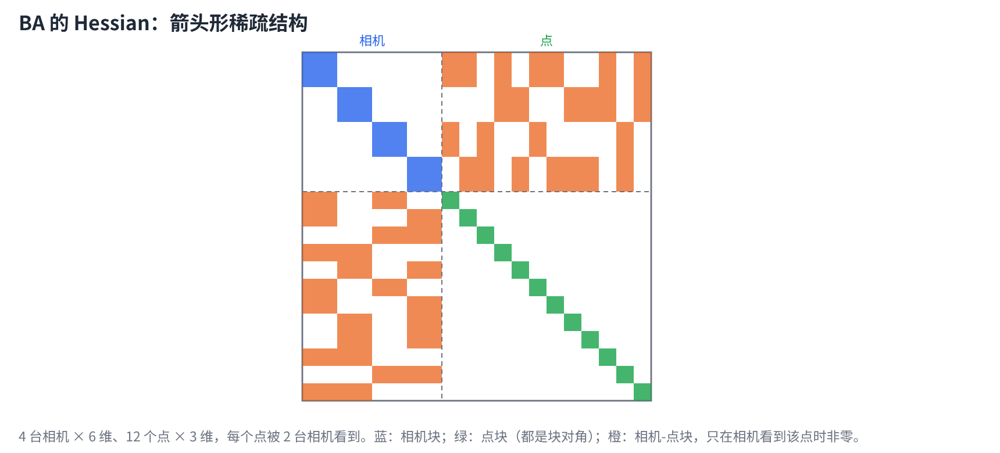
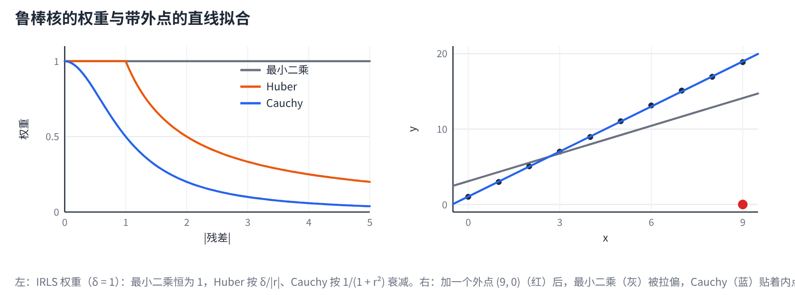
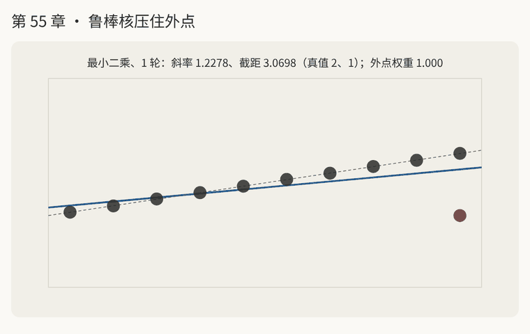

第 55 章 · SLAM 的优化：重投影误差与 BA、稀疏 Hessian 与 Schur 补、鲁棒核、边缘化
本地运行
git clone https://github.com/wikieden/math-and-eval-stats
cd math-and-eval-stats/code/notebooks
pip install jupyterlab torch numpy
jupyter lab ch55_slam_optimization.ipynb也可以下载后直接用 VS Code 打开 .ipynb 运行。需要 GPU 的章节在 Colab 里选「代码执行程序 → 更改运行时类型 → GPU」。
本章回答：Bundle Adjustment（BA）到底在最小化什么？上千个点、几十个相机，为什么还能每秒解好几次？一个错误的匹配为什么能毁掉整个优化，鲁棒核怎么防？滑动窗口要扔掉旧状态时，为什么不能直接删掉？
讲解日期：2026-11-25 · 上一章：第 54 章 点云与配准 · 下一章：第 56 章 VIO
对应原文：Barfoot 2emath-and-eval-stats/materials/text/books/barfoot-state-estimation-robotics-2e.txt（批量估计与 BA；高斯的 Schur 补 L1577–L1586）；ORB-SLAM3math-and-eval-stats/materials/text/papers/orb-slam3-2007.11898.txt（局部 / 全局 BA，L48、L69）；VINS-Monomath-and-eval-stats/materials/text/papers/vins-mono-1708.03852.txt（滑动窗口与边缘化先验 {r_p, H_p}，L115、L629）
本章缩写：SLAM = Simultaneous Localization And Mapping（同时 / 定位 / 与 / 建图）；BA = Bundle Adjustment（光束法平差：同时优化相机位姿和 3D 点）；GN / LM = Gauss-Newton / Levenberg-Marquardt（第 14 章）；H = JᵀJ（近似 Hessian）；Λ = 信息矩阵（协方差的逆）；IRLS = Iteratively Reweighted Least Squares（迭代重加权最小二乘）；δ = 鲁棒核的阈值。全部缩写见 附录 · 缩写与术语表
讲解
第一步：重投影误差：BA 最小化的东西（2026-11-25）
类比：把地图上标的每个地标，按你以为的位置投到每张照片里，和照片上真看到的位置比。
每个观测给 2 维残差，对这台相机位姿的雅可比 2×6（在切空间里，第 19 章），对这个点的雅可比 2×3，对其他所有变量的雅可比都是 0。
例子（点 (0.5, −0.2, 4)、相机在原点、观测 (385, 214)）：残差 (−2.5, 1.0) 像素；对点的雅可比 [[125, 0, −15.6], [0, 125, 6.25]]：f/Z = 125，沿深度方向的导数小得多（深度最难估）。
一句话：BA 最小化所有观测的重投影误差；每个残差只依赖一台相机和一个点，雅可比极其稀疏。
第二步：稀疏 Hessian 与 Schur 补（2026-11-25）
GN / LM（第 14 章）每步解 HΔ = −g，H = JᵀJ。把变量排成 [相机 | 点]：
H_pp 是块对角（每个点 3×3，点之间不直接相关），H_cc 也是块对角。用 Schur 补先把点消掉：
H_pp⁻¹ 只要求 1000 个 3×3 的逆，剩下的“缩减相机系统”只有 6c × 6c。
例子（10 台相机、1000 个点、每个点被 5 台相机看到）：
| 项 | 数量 |
|---|---|
| 变量数 | 3,060 |
| 满矩阵元素 | 9,363,600 |
| 非零元（约） | 189,360 |
| 缩减相机系统 | 60 × 60 = 3,600 |
解一个 60×60 的稠密系统几乎不花时间，所以 BA 能实时跑。点多相机少时 Schur 补最划算；位姿图优化（只有位姿、没有点）直接用稀疏 Cholesky。

图 55-1 · 4 台相机、12 个点的 H：左上相机块（块对角）、右下点块（块对角）、两侧是相机-点块（只有“这台相机看到这个点”的位置非零），像一个箭头一句话：BA 的 Hessian 是“箭头形”稀疏矩阵；Schur 补先消掉块对角的点，只解一个小小的相机系统。
第三步：鲁棒核：别让一个错匹配毁掉一切（2026-11-25）
最小二乘对大残差的惩罚是平方的，一个错误匹配（外点）会把整个解拉偏。鲁棒核 ρ 让大残差的影响变小；用 IRLS 实现：每轮按残差算权重 w = ρ′(r)/r，再解加权最小二乘。
| 残差（δ = 1） | 0.5 | 2 | 10 |
|---|---|---|---|
| Huber 权重 min(1, δ/|r|) | 1.0 | 0.5 | 0.1 |
| Cauchy 权重 1/(1 + (r/δ)²) | 0.8 | 0.2 | 0.01 |
例子（y = 2x + 1 上 10 个点，加一个外点 (9, 0)）：
| 方法 | 斜率 | 截距 |
|---|---|---|
| 最小二乘 | 1.2242 | 3.0890 |
| Huber（IRLS） | 1.9391 | 1.1825 |
| Cauchy（IRLS） | 1.9907 | 1.0447 |
一个外点让最小二乘的斜率偏了 40%；Cauchy 几乎完全无视它。Huber 是凸的（稳，但外点仍有线性影响），Cauchy 不凸（更抗外点，但需要好的初值）。

图 55-2 · 左：权重随残差的变化（最小二乘恒为 1，Huber 按 δ/|r| 衰减，Cauchy 按平方衰减）；右：带一个外点的直线拟合，灰线最小二乘被拉偏，蓝线 Cauchy 贴着内点一句话：鲁棒核用 IRLS 给大残差降权；Huber 凸而温和，Cauchy 更狠但非凸。
第四步：边缘化：扔掉旧状态，但留下它的信息（2026-11-25）
类比：辞退一个老员工之前，让他把知道的事写成交接文档。
滑动窗口只保留最近几帧。直接删掉旧帧，会把它和留下来的帧之间的约束一起丢掉。正确的做法是边缘化：在信息形式下，对要扔的变量 x_m 做 Schur 补（Barfoot L1577–L1586）：
得到留下变量上的一个“先验”（VINS-Mono 的 {r_p, H_p}，L629）。
例子：Λ = [[4, −2], [−2, 3]]，边缘化 x₁：x₀ 的信息 4 − 4/3 = 2.6667；从协方差算 1/Σ₀₀ 也是 2.6667。
代价：边缘化会让原本不相连的变量之间出现关联（填充，fill-in），而且线性化点被固定，之后不能再改（一致性问题，FEJ 等技巧就是为此）。
一句话：边缘化 = 信息矩阵对扔掉的变量做 Schur 补，把它的约束折算成留下变量的先验；代价是填充和线性化点固定。
动画演示：鲁棒核压住外点

可交互版：animations/55-slam-optimization.html（下拉切换核函数；滑块调外点的位置和 IRLS 轮数）。
怎么看：
- 10 个内点和 1 个外点，直线是当前拟合，点的大小是 IRLS 给它的权重（第三步）；
- 最小二乘：外点越远，直线被拉得越偏；Huber / Cauchy：迭代几轮后外点的点变得很小，直线回到内点上；
- 右上角是斜率和截距（真值 2、1）。
练习与作答记录
题 1（第二步）：20 台相机、5000 个点，Schur 补后要解的系统是多大？H_pp 要求多少个几乘几的逆？
作答：（待作答）
题 2（第三步）：残差 3、δ = 1，Huber 和 Cauchy 的权重各是多少？如果残差是 0.8 呢？
作答：（待作答）
题 3（第四步）：Λ = [[2, 1], [1, 5]]，边缘化 x₁ 后 x₀ 的信息是多少？和直接删掉 x₁（只保留 Λ₀₀ = 2）比，哪个更“自信”，为什么？
作答：（待作答）
口诀
BA 投回照片比位置，每个残差只连一相机一个点；
Hessian 像箭头，Schur 补消点，只解小相机系统；
一个外点能拉偏全局，鲁棒核降权，Huber 温和 Cauchy 狠；
扔旧帧要边缘化，Schur 补折成先验，代价是填充。
本章复习卡片
ST180（重投影误差与 BA 雅可比的稀疏性）、ST181（箭头形 Hessian 与 Schur 补）、ST182（鲁棒核与 IRLS；边缘化）。练习做完后，按答错、卡住的地方补上。
附录 · 延伸阅读
留给以后深入学习用，不影响本章主线。★ 是建议先读的。
推荐阅读
| 读什么 | 读哪里 | 读它为了什么 |
|---|---|---|
| ★ Barfoot 2e | 批量估计、BA、Schur 补（L1577） | BA 与边缘化的推导 |
| ★ VINS-Mono（Qin 2018） | 滑动窗口与边缘化（L115、L629） | 实际系统里的边缘化先验 |
| ORB-SLAM3（Campos 2021） | §IV–VI | 局部 / 全局 BA 与位姿图 |
| 第 14 章 无约束优化 | 第五步 | Gauss-Newton 与 LM |
| 第 20 章 状态估计 | 第五步 | 因子图 = 非线性最小二乘 |
数学原理
- GN 法方程：min ‖r(x)‖² ⇒ JᵀJΔ = −Jᵀr。
- Schur 补消元：[[A, B], [Bᵀ, D]]·[x, y] = [a, b] ⇒ (A − BD⁻¹Bᵀ)x = a − BD⁻¹b；D 块对角时 D⁻¹ 极便宜。
- IRLS：min Σρ(r_i) 的驻点满足 Σρ′(r_i)∂r_i/∂x = 0 = Σw_i r_i ∂r_i/∂x，即加权最小二乘的正规方程。
- 边缘化 = 条件化的对偶：协方差形式里边缘化是取子块，信息形式里是 Schur 补；条件化反过来。
公式清单
| 公式 | 意思 |
|---|---|
| \(\sum\rho(\|\pi(K(R_jp_i + t_j)) - u_{ij}\|^2)\) | BA 目标 |
| \((H_{cc} - H_{cp}H_{pp}^{-1}H_{pc})\Delta_c = \cdots\) | 缩减相机系统 |
| Huber：w = min(1, δ/|r|)；Cauchy：w = 1/(1 + (r/δ)²) | 鲁棒核权重 |
| \(\Lambda' = \Lambda_{rr} - \Lambda_{rm}\Lambda_{mm}^{-1}\Lambda_{mr}\) | 边缘化 |
代码对照：把本章的数字用代码算一遍
代码在仓库本地
math-and-eval-stats/solutions/chapter-code/ch55_slam_optimization.py，配套测试tests/test_ch55.py：
bash cd math-and-eval-stats/solutions/chapter-code uv run python ch55_slam_optimization.py uv run pytest tests/test_ch55.py
讲义 ↔ 代码：
| 讲义 | 公式 | 写法 | 跑出来 |
|---|---|---|---|
| 第一步 重投影 | π(K(Rp + t)) − u | reproj_residual、numeric_jac |
(−2.5, 1.0)；2×3 雅可比 |
| 第二步 Schur | 规模统计 | ba_sizes(10, 1000, 5) |
3060 变量，60×60 |
| 第三步 鲁棒核 | IRLS | line_fit("cauchy") |
斜率 1.9907 |
| 第四步 边缘化 | Schur 补 | marginalize() |
2.6667 |
关键几行：
uvw = K @ (r @ p_world + t); return uvw[:2] / uvw[2] - uv_obs # 重投影残差
huber = np.where(a <= delta, 1.0, delta / a); cauchy = 1 / (1 + (r / delta) ** 2)
sol = np.linalg.solve(a.T @ (w[:, None] * a), a.T @ (w * y)) # 加权最小二乘一步
代码里才看得到的 3 件事：
- 雅可比用数值差分：h = 1e-6 的前向差分，精度约 1e-4；真实 BA 用解析雅可比（对位姿的部分在切空间里求，第 19 章）。
- Hessian 的非零元是估算：只数了块的大小，没有真的构造矩阵；用
scipy.optimize.least_squares做一个小型 BA 并画出稀疏 Jacobian，留给自己做（里程碑 ME-M33）。 - IRLS 的权重用上一轮的残差：第一轮所有权重为 1（就是最小二乘），之后逐轮更新；Cauchy 从最小二乘的解出发，这个例子里能收敛到内点上，外点更多时可能陷进局部最优。
自己改一改（不影响练习答案）：
- 把外点改成 (9, −20)，Huber 和 Cauchy 的斜率各变成多少？
- 在
marginalize里加第三个变量（3×3 的 Λ），边缘化中间那个，看另外两个变量之间是否出现新的关联（填充）。